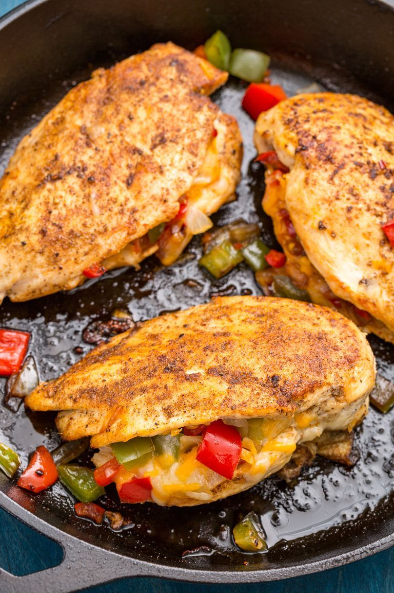

Cajun-Stuffed Chicken

Discription
cajun chicken is here to spice up your weeknight dinner. AND its absolutely stuffed with
peppers and cheese. That zestiness also makes it a perfect leftover contender because
that flavor last and lasts. Just store it in an airtight container in the fridge and it
can last for up to 4 days. After your first bite you'll be wondering why you haven't been
stuffing your chicken for years!
Ingredients
- 2 tbsp.extra-virgin olive oil
- 1 c.medium onion, diced
- 1 c.red and green bell pepper, diced
- Kosher salt
- Freshly ground black pepper
- 4 boneless, skinless chicken breasts
- 1 c.shredded cheddar
- 2 tbsp.Cajun seasoning
Steps
- Preheat oven to 350°. In a large ovenproof skillet over medium heat, heat oil.
Add onions and peppers and cook until soft, 5 minutes. Season with salt and pepper.
Remove from heat and let cool slightly.
- With a sharp paring knife, create a pocket in each chicken breast.
Stuff each with vegetable mixture, then top with cheddar. Season
chicken all over with Cajun seasoning, salt, and pepper.
- Add chicken to skillet and bake until cooked through, about 25 minutes.